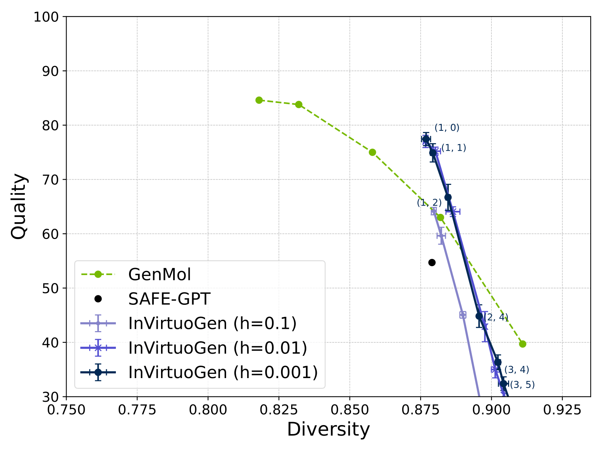
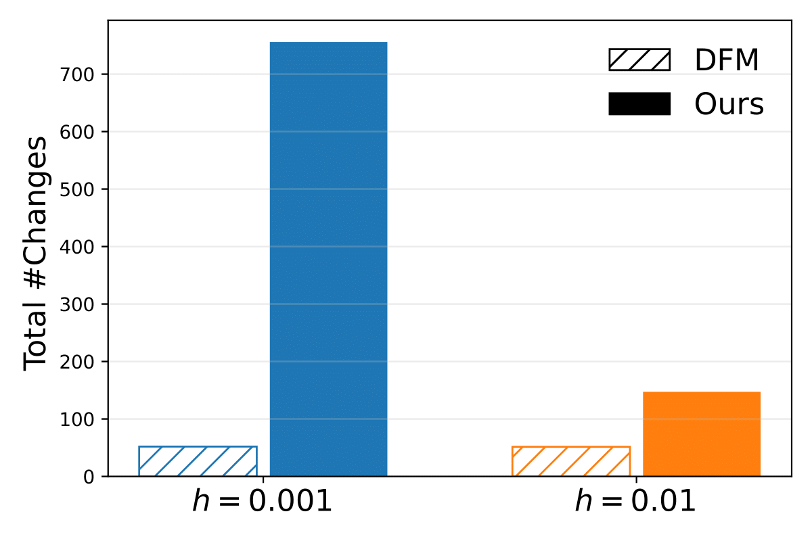

InVirtuoGen: Some Thoughts on Why Discrete Flows Actually Work for Molecules
Coming from physics, one of the most important insights I had was that the inductive biases of the architectures you use matter enormously. In physics, if you're modeling planetary orbits, you better have rotational symmetry built in. If you are working with particle clouds, your model should better be permutation invariant. The structure of your model should reflect the structure of your problem.
So when I arrived at In Virtuo Labs and saw their frontier model was based on GPT-style next-token prediction for molecules, something felt fundamentally wrong. They were generating molecules left-to-right, like writing a sentence. But molecules aren't sentences. There's no "first" atom in a benzene ring. The model was learning chemistry despite the architecture, not because of it.
The Search for Better Inductive Biases
Naturally, I started looking at what else was out there. The most promising thing I found was NVIDIA's GenMol - a masked discrete diffusion model. At least it wasn't pretending molecules had a left-to-right order. Instead, it would mask random tokens and gradually unmask them. Better, but still... once you unmask a position, you're committed. No take-backs. So now you are just predicting tokens in an aribtrary order.
Here's the thing: GenMol had no open code at the time for my to investigate (even now, their checkpoints are not openly accessible to my best knowledge). So I started building my own version. But instead of using their masked diffusion framework, I implemented it using discrete flow matching, mostly because I had just read the Gat et al. paper and thought it was elegant.
What started as "let me just recreate GenMol to understand it" turned into something unexpected.
My First Insight: Step Size Invariance
So one thing I realized quickls was that with masked diffusion models like GenMol, using more steps helps, but there is a hard limit: you cannot have more steps than you have tokens to unmask, unless you rely on some remasking heuristics, that did not seem to work well. So naturally I thought, that this was the time for my uniform source to shine. So I tested the performance of my discrete flow implementation as a function of the step size.
But what I discovered was depressing, with standard discrete flow sampling, changing the step size did... nothing. Whether I used 10 steps or 100 steps, the model made the same total number of token changes. Look at this:

But then I had the idea to check how often the model actually changes a token. And what I saw was even more concerning: Whether you sample with granularity 0.01 or 0.001, the model changes the same number of tokens on average. This made little intuitive sense. If you take smaller steps, you should make more changes overall. But the model learned to compensate: smaller steps changed fewer tokens per step, keeping the total constant. It looked like the model was saying "I need exactly 50 edits to make this molecule, no more, no less."
This was depressing. If finer granularity doesn't help, then discrete flows have no advantage over masked diffusion. I almost gave up here.
The Sampling Hack That Saved Everything
Out of frustration (and honestly, a bit of desperation), I tried something theoretically wrong. Instead of using the proper discrete flow update equation:
Correct (but apparently useless) way:
$$ X_{t+h} \sim X_t + h\, v_\theta(X_t) $$What I tried in desperation:
$$ X_{t+h} \sim p_{1|T}(X_t) $$Basically, instead of taking small steps according to the velocity field, I just sampled fresh from the model's predicted distribution at each timestep. This shouldn't work better. It throws away the careful mathematical framework of flow matching.
But it did work better. Dramatically better. And suddenly, granularity mattered:
The dynamics completely changed. Instead of the model conserving its "edit budget," it now started with many simultaneous changes that gradually decreased as the molecule converged. It looked like actual refinement - messy at first, then progressively cleaner.

Why This Actually Makes Sense (In Hindsight)
The standard discrete flow sampler tries to follow a continuous path through a discrete space. It is like trying to draw a smooth curve on a checkerboard. Our sampler embraces discreteness and repeatedly jumps to locally stable states, still guided by the flow.
RL For Oracle Optimization: why GA plus PPO for flows
Established RL approaches in this area assume an autoregressive factorization: you can write down log p(x) as a sum of next token log probabilities and plug that into REINFORCE or PPO. That does not hold for discrete flows. There is no tractable log p(x) for the full sequence, and the policy acts on all positions at once, not left to right.
To make RL work, I adapted PPO to the flow setting by optimizing a time weighted objective on partially noised states. For each sequence, I sample timesteps t, construct a noised state x_t by interpolating between uniform tokens and the current sample, and maximize \(\sum_{i \in \text{noised}} A\, \log \pi_\theta(x^i_1 \mid x_t, t)\) with a clipped surrogate. Advantage comes from standardized oracle scores. In short: we backprop through the model's per position predictions under a flow matching view, not through a next token chain.
RL alone is not enough when oracle calls are scarce. I fuse a simple genetic algorithm that breeds high scoring molecules to create strong starting states x_{t=0}. Crossover is done in fragmented SMILES space by swapping fragment blocks, then the flow refines the offspring. A small mutation budget on the best molecules maintains local exploration. An adaptive bandit biases sequence lengths that repeatedly yield high rewards while retaining exploration.
- GA gives sample efficient jumps across chemotypes.
- Flow plus PPO gives gradient guided refinement under shaped rewards.
- The uniform source makes GA outputs valid starting points without masking tricks.
Fragment Chemistry: The Part That Actually Makes Sense
Using fragmented SMILES is not only a minor detail. It is crucial for practical applications. Real medicinal chemists don't think in terms of individual atoms - they think about scaffolds, functional groups, building blocks. By fragmenting molecules using BRICS (Breaking of Retrosynthetically Interesting Chemical Substructures), we're speaking their language.
The PMO Benchmark Drama
Beating GenMol on the PMO benchmark felt good, I won't lie. But here's the thing - these benchmarks are weird. The "deco hop" task asks you to maximize the similarity to a specific molecule while decorating it. The "median molecules" tasks are essentially asking for mediocrity.
What actually matters is that the model can be directed toward specific objectives while maintaining chemical validity. The fact that we can do this with a single set of hyperparameters (while GenMol needs task-specific tuning) suggests we're doing something right. Or we got lucky. Probably both.
Actual Limitations (Not Marketing Speak)
Let's be honest about what InVirtuoGen can't do:
- No stereochemistry - we completely ignore it, which is terrible for drug discovery
- The SA score we optimize for is a rough heuristic that often disagrees with actual chemists
- Our "drug-likeness" metrics are from 2012 - the field has moved on
- For fragment-constrained generation, we basically turn back into a masked model, negating our main advantage
- The model has no concept of 3D structure or protein binding - it's purely 2D
Why I Think This Matters (Beyond Papers)
The real test will be whether actual drug discovery teams find this useful. I've shown it to a few medicinal chemists, and the reactions have been... mixed. Some love the fragment control. Others point out (correctly) that generating molecules is the easy part - synthesizing and testing them is where the real work happens.
But I think there's something deeper here. By treating generation as refinement rather than completion, we're acknowledging that molecules exist in a continuous space of possibilities. There's no "correct" order to build them in. This feels more aligned with chemical reality, even if I can't prove it mathematically.
Code and Reproducibility
Everything's on GitHub. Fair warning - the code is research code. It works, it's documented, but it's not beautiful. I prioritized reproducibility over elegance. Every weird hack and magic number is there because removing it made things worse.
If you're trying to reproduce the results, use the Docker container. I learned the hard way that "works on my machine" isn't good enough when your machine has seventeen different PyTorch versions installed.
What I'd Do Differently
If I started over tomorrow, I'd:
- Don't follow the classic pitfalls of machine learning research: you are so close to beating the state-of-the-art, the only thing you need is to change hyperparameters slightly, or so you think.
- Test on actual medicinal chemistry problems earlier - benchmarks lie
- Accept the weird sampling hack sooner instead of fighting it for two months
- Write better documentation as I go (narrator: he won't)
The Honest Take
InVirtuoGen works. It generates good molecules. It beats benchmarks. But I'm under no illusion that it's going to revolutionize drug discovery tomorrow. It's a step forward in a specific technical direction that I believe is more aligned with chemical reality.
The real validation will come when we use it to design a molecule that actually helps someone. Until then, it's just equations and benchmarks. Important ones, I think, but still just numbers on a page.
What keeps me excited is that feeling when the model generates something unexpected but chemically beautiful - a ring system I hadn't seen before, or a clever way to connect two fragments. It reminds me that we're not just optimizing metrics; we're exploring a space of possibilities that might, eventually, lead to medicines.
This is my first real project in drug discovery after transitioning from physics. I'm still learning, still making mistakes, and definitely still discovering how much I don't know. If you're working on similar problems or see flaws in my approach, I'd genuinely love to hear from you. Science is better when we admit what we don't know.
Find me at benno.kaech@icloud.com or the inevitable conference poster session where I'm explaining why our sampling hack works.